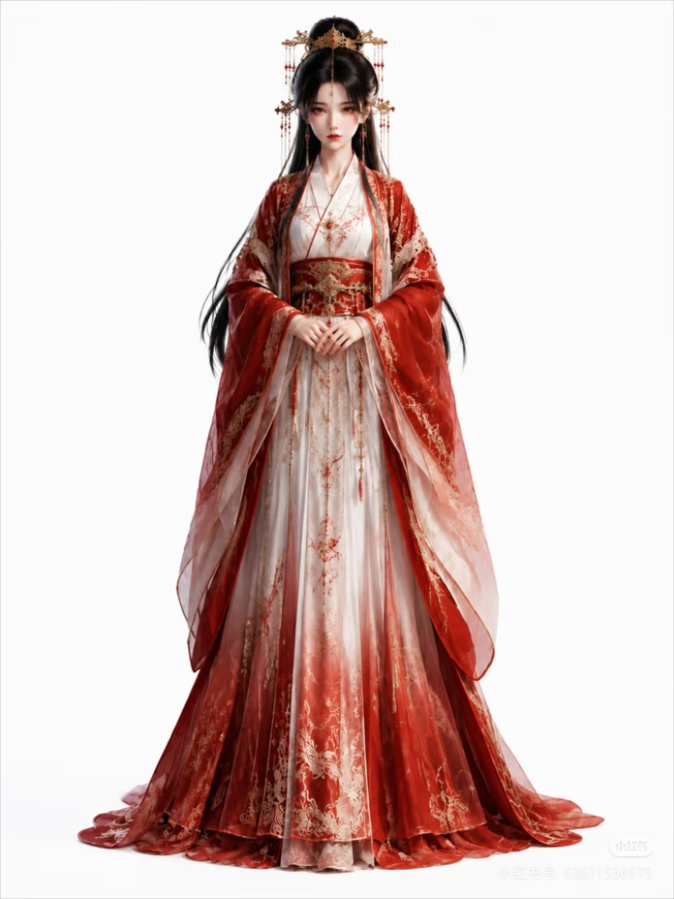
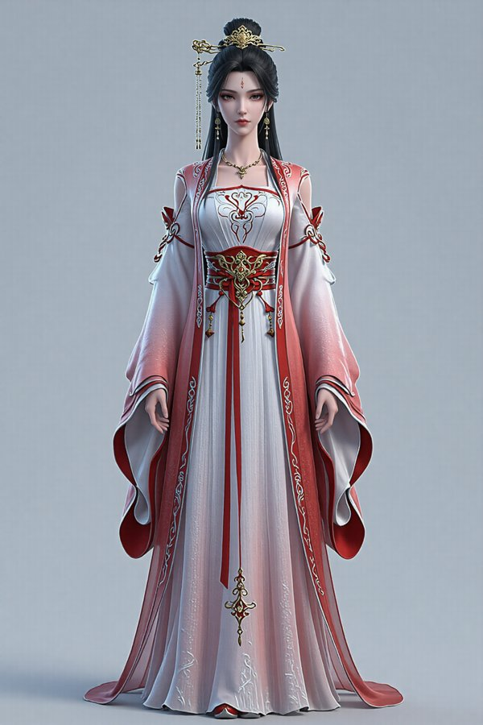

基于风格参考图，通过11×11 Lora强度网格调参（Gram风格距离权重0.8），自动找到最佳参数组合


通过对「完美世界国漫风」和「国漫CG」两个Lora模型进行0~1.0强度的11×11网格搜索（共121组参数）， 以Gram风格距离为主要目标（权重0.8），综合评估头身比、上下半身比例和人体完整性，自动找到最佳参数组合： pw=0.6, cg=0.5，综合评分0.8162，Gram风格距离0.286（全量最低之一），在121组参数中排名第一。